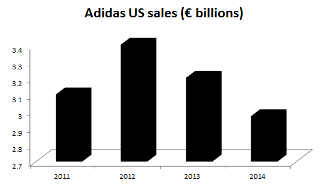
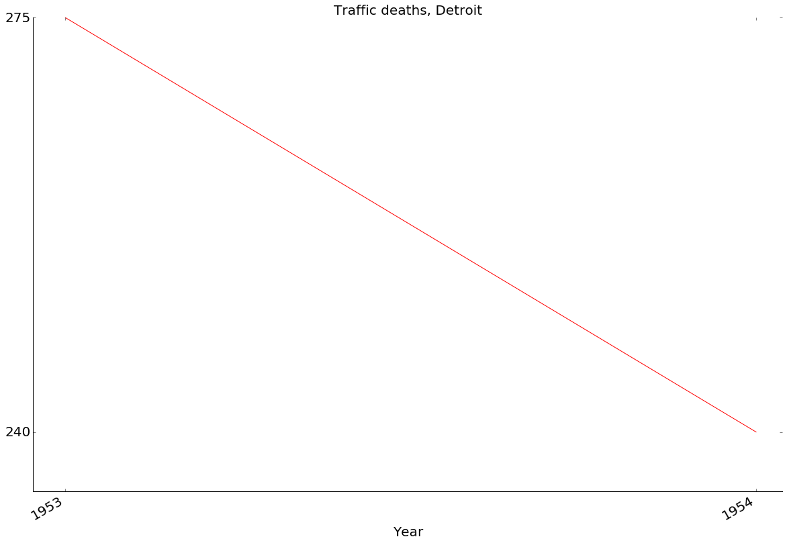
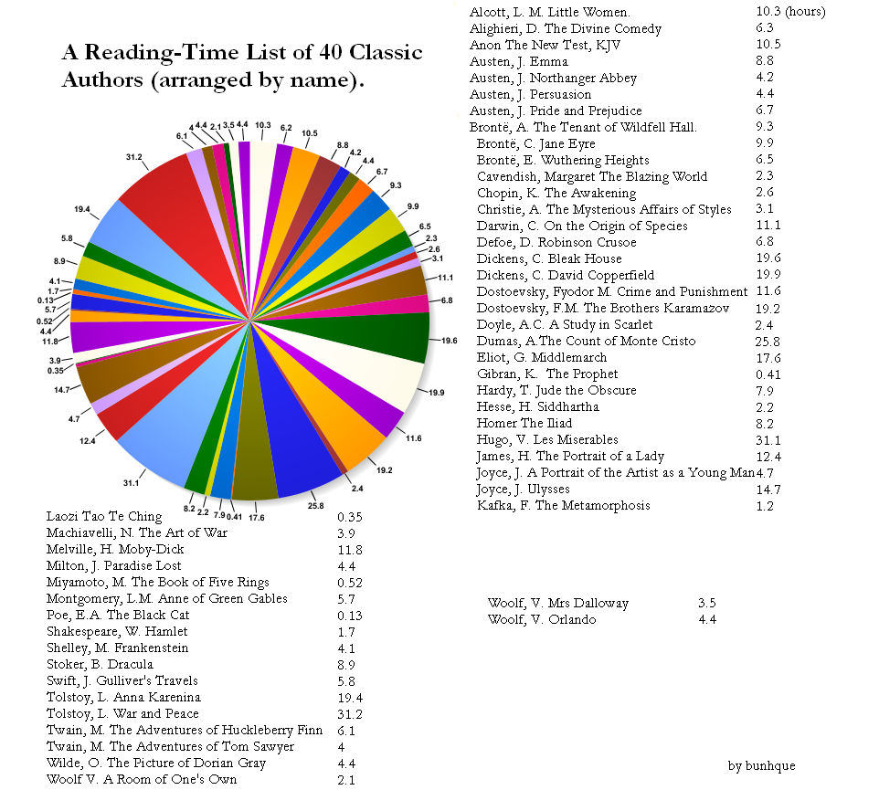

Not only this pie chart data could be presented using a table:
| Race | Convictions |
| White | 6584 |
| Black | 2356 |
| Asian | 1161 |
| Mixed | 508 |
| Not stated | 1046 |
| Other | 124 |
There are 2 types of people in the world: those who can extrapolate from incomplete data.


Sign of the times: everybody is connected and everything is recorded. Just look at how many people hold their phones.

But not only that!
President Barack Obama on 9 May 2013 signed the open data executive order:
Making Open and Machine Readable the New Default for Government Information.(Video on the next slide)
But, many different governments adopt similar open data policies around the world, enabling changes and innovations on unthought before scale.
Data available at data.gov.

Data Science has potential to transform our lives for the better!
| processes 20 PB a day (2008) crawls 20 B web pages a day (2012) |
|
| > 100 PB of user data + 500 TB/day (2012) |
|
| Amazon Web Services | S3: 449 B objects peak 290k requests/second (2011) 1T objects(2012) |
| JPMorgan Chase | 150 PB on 50k+ servers running 15k apps (2011) |
| CERN | Produces 15 PB a year |
Google processes $ 20 $ PB a day (2008).
Tolkien's The Lord of the Rings trilogy has $ 788 $ pages ($ 311 + 258 + 219 $) totalling to $ 2.5 $ MB of raw text.
$$ \frac{20 PB}{2.5 MB} = \frac{2^{50}}{2^{20}} = 2^{30} \approx 10^9 $$Google analyses an equivalent of 1 billion of LoTR trilogies every day!
It is not just collection, this data is processed.
I wish I could read so many books a day!

What was unthinkable even for visionaries 30 years ago, today seems obvious for everyone.
Information age revolution takes place right now and data scientist are at the edge of it...
But, who exactly is a data scientist?
How data scientist title come to be:
“Business analyst” seemed too limiting. “Data analyst” was a contender, but we felt that title might limit what people could do. After all, many of the people on our teams had deep engineering expertise. “Research scientist” was a reasonable job title used by companies like Sun, HP, Xerox, Yahoo, and IBM. However, we felt that most research scientists worked on projects that were futuristic and abstract, and the work was done in labs that were isolated from the product development teams. It might take years for lab research to affect key products, if it ever did. Instead, the focus of our teams was to work on data applications that would have an immediate and massive impact on the business. The term that seemed to fit best was data scientist: those who use both data and science to create something new.
[..] a data scientist is a predictive analytics professional who uses statistics and predictive modeling to solve business problems, and who has experience with tools for organizing unstructured, often streaming Big Data. They can work with a wide variety of data, as they have the skills to build their own utilities to acquire and clean it, and don’t rely on out-of-the-box solutions to structure their data.
Data scientist is a higly educated person.

Over the time, data scientist become a bloated term as everyone wanted to add something to it.
Ironically, the expanded expectations of Data Scientists are a product of their own success. The ability to advise executives, understand deeply technical problems, communicate, (*INSERT ENDLESS LIST*), illustrates that business leaders see Data Scientists as a bridge that can finally align IT and Business in a much more permanent and productive manner.
Data science is not a process or a field that can be simply automated or replaced by a smart technology.
This is a field in which people use advanced technology to do research that wouldn't be viable otherwise and gain powerful insights shaping the business today.
More often toolkit will be chosen to suit a team not the team hired to work with a given set of tools. Of course, it is different story with a single hire into an existing team.
Some companies that made their business around data science believe that humans will never be replaced by machines.
Data scientists come in different flavours:
... and different flavours of data scientists spend their time differently...
The width is per cent of data scientist answering the survey.

Software Engineer
Statistician
Business Analyst
Data Scientist
The least transferable skill and for quite obvious reasons most domain related. Also compared to others quickest to learn.
The good news is that most companies are willing to hire candidates with strong background in mathematics/statistics and software engineering and to teach them required domain knowledge.
At the same time, essential skills such as storytelling and ability to express complex ideas clearly require a lot of practice, but are often neglected by graduates from scientific backgrounds. Don't be one of them!
Kickoff cheatsheet, for starters in BA...
Let data set change your mindset.
One salutary incident that I recall concerned a British mathematical physicist and an American theoretical physicist, Dr. Charles Kittel, who had been set together, side by side, to work on the problem of deducing the characteristics of German magnetic mines laid at sea, especially the sensitivity and polarity of the firing mechanism. The data from which the characteristics were to be deduced were the reports of our minesweepers as they exploded the mines, with the positions of the explosions being reported as ranges and bearings from the minesweepers. The first thing that Kittel wanted to do was to take a few trips on a minesweeper to sample the data for himself. The British theorist refused to do this, on the argument that he could only make a few trips, and therefore any experience so gained might be heavily biased, and therefore much too dangerous as a basis for generalization. So he stuck to his desk while Kittel went out minesweeping. What Kittel immediately found was that the reports from the minesweeping crews were wildly inaccurate as regards both range and bearing, and the only item of data on which one could rely was whether the mine had exploded to port or starboard. Simplifying all the later reports down to this extremely limited observation, he nevertheless succeeded in deducing the answer; but the British theorist went on accepting the data as accurate and never reached an answer.
[..] the United States air force had a serious problem: its pilots could not keep control of their planes [..] the problems were so frequent and involved so many different aircraft that the air force had an alarming, life-or-death mystery on its hands. [..] At first, the military brass pinned the blame on the men in the cockpits, citing “pilot error” as the most common reason in crash reports. This judgment certainly seemed reasonable, since the planes themselves seldom malfunctioned. [..] piloting skills were not the cause of the problem. If it wasn't human or mechanical error, what was it? [..] officials turned their attention to the design of the cockpit itself. [..] when the army was designing its first-ever cockpit, engineers had measured the physical dimensions of hundreds of pilots, and used this data to standardize the dimensions of the cockpit. [..] In 1950, [..] measured more than 4,000 pilots on 140 dimensions of size [..] and calculated the average for each of these dimensions. [..] the consensus among fellow air force researchers was that the vast majority of pilots would be within the average range on most dimensions. After all, these pilots had already been pre-selected because they appeared to be average sized. [..] The scientists also expected that a sizable number of pilots would be within the average range on all 10 dimensions. But even Daniels was stunned when he tabulated the actual number. Zero. Out of 4,063 pilots, not a single airman fit within the average range on all 10 dimensions. [..] There was no such thing as an average pilot.
There are 3 elements to every good rhetoric:
Although Cathy is over 60 years old, she's also relatively tech-savvy and already watches her favourite shows on Netflix. Karl, on the other hand, subscribes to sport broadcasting channels - experience hard to replicate online. Therefore, Cathy is much more likely to cut the cord and we should make a special offer to her and not Karl.
First of all, I have to say, as a businessman, I get along with everybody. I have business all over the world. [..] We need people that know what the hell they’re doing. And politicians, they’re all talk, they’re no action. And that’s why people are supporting me.~ Donald Trump during South Carolina republican debate.
We have waited for more than 340 years for our constitutional and God-given rights.~ Martin Luther King's in the letter from a Birmingham Jail.
If you understand how to influence people then you will be able also to spot when people try to influence you.
Not everyone has always genuine intentions when influencing you - just take for example politicians and not everyone is a great presenter - take for example your least favourite teacher.
By knowing ways to influence people you also will be able to better distill the truth from bias.
In large organisations, such as where there is the most work for data scientists, you will need to listen more often than to give a speech. Hence, applying this skill in the opposite direction helps you get the information and understanding of data you need from the speaker.
The value of this is not to be undermined, even more given that
A lot of times, people don't know what they want until you show it to them.
Steve Jobs
BTW, if you want to say that this all logos, ethos, and pathos is not how one should deliver a presentation or speech then...
... you have been a victim to the paper clip guy.
When you are presenting, you are selling your idea. It is no good to someone if you are unable to sell it.
To me, job titles don’t matter. Everyone is in sales. It’s the only way we stay in business.
Harvey Mackay
Great speeches do not only influence people, organisations, audience, but also inspire and motivate them, and they can even change the world, but only if you will be able to touch their hearts.
Surprisingly enough, logos (logic) is only 10% of the most successful presentations. You must have the hard evidence, but you also need to make people care about your message.
Aristotle knew that pathos must be part of each oratory 2350 years ago!
Raw data is very rarely successful and passion of the speaker is 3rd most significant factor, considered in funding decisions by angel investors.
My favourites:
Go as far as you can see; when you get there, you'll be able to see farther.
John Pierpont Morgan
Have other favourites? Let me know!
Categories such as time, space, cause, and number represent the most general relations which exist between things; surpassing all our other ideas in extension, they dominate all the details of our intellectual life. If humankind did not agree upon these essential ideas at every moment, if they did not have the same conception of time, space, cause, and number, all contact between their minds would be impossible...
Emile Durkheim, Les formes élémentaires de la vie religieuse (Paris, 1912)
Statistical graphics are instruments to help people reason about quantitive information.
Often the most effective way to describe, explore, and summarize a set of numbers - even a very large set - is to look at pictures of those numbers.
Of all methods for analyzing and communicating statistical information, well-designed data graphics are usually the simplest and at the same time the most powerful.
Human eye have amazing ability to extract a lot of information from a small area (example on the next slide).
So, how to visualize statistical information?
The below map contains location and boundaries of 30,000 communes. Tabular representation of the same data would require 240,000 numbers. Graphical representations have incredible ability to compress data.

Excellence in statistical graphics consists of complex ideas communicated with clarity, precision, and efficiency. Graphical displays should
Graphics need to make data clearer. Shape data to lead observer to conclusion.
$$ \begin{equation} \begin{split} \mbox{lie factor} &= \frac{\mbox{size of effect shown in graphic}}{\mbox{size of effect in data}} \end{split} \end{equation} $$Lie factor within $ [0.95, 1.05] $ is acceptable, beyond that means that data is misleading.
Can also define $ log LF $, where $ log LF < 0 $ means that data is underrepresented and $ log LF > 0 $ means that is overrepresented.
Dimensionality expansion (e.g. showing stock price of crude oil in 3D barrels: 1D -> 3D) leads to $ LF $ explosion due to power factor.
In the below picture $ 454\% $ price increase is displayed as $ 4,280\% $ increase.

Here, the problem is too strong emphasis on design variation, without regard for reflecting the actual data variation.
The confounding of design variation with data variation over the surface of graphic leads to ambiguity and deception.
Reflect data dimensionality and do not inflate the dimensions (design dimensionality should be less or same as data dimensionality).
Show data variation, not design variationHowever, it generally is a good idea to introduce other design variation (e.g. depth, shade, number instead of point, etc.) to represent data dimensions with less design dimensions.
Not only this pie chart data could be presented using a table:
| Race | Convictions |
| White | 6584 |
| Black | 2356 |
| Asian | 1161 |
| Mixed | 508 |
| Not stated | 1046 |
| Other | 124 |
Information is repeated with colour and numbers.
The same chart is repeated multiple times making it only less visible.
The pie charts are presented in perspective making the reading of graphical data even trickier.
Even data is wrong. Convictions are meaningless if we don't know, for instance, total population.
What is height of those bars? The 3D and plain color makes reading the data only harder, so what is a point of it?
What does the thickness represent? Couldn't those just be lines or even a table?

I actually might starting using this one. It is hilarious :)!
Money value changes over time with inflation, but also can be influenced by factors such as time-value of money. Simply plotting nominal value over time is going to lead to terribly bad conclusions.
When we talk about money over multiple years then often we will want to use adjusted value. But, it is not limited to money and applies to everything that changes value over time.
Graphics must not quote data out of context.
Local government could advertise a success of police, attributed to increased number of controls, in death reduction, but does the below graph tell the truth?
We can easily imagine data to look like in one of the subplots. Actually the red line here shows the actual data, with the thick line being the graph from the previous slide.


Can you believe that it was published by World Bank?
Like in a game of charades, everyone's perception of the same can be different. Hence, know your audience and do not make too easily assumptions. Different people can see different things in the same graph, depending on their background and data context.
Where is ambiguity make explicit what is meant by data for example using annotation.
However, never underestimate your audience. Often people are capable to induce much more than the author thought. Making everything too obvious make annotations redundant and data boring.
Ambiguity that would be fine in art, in statistical graphic needs to be specified.
So, how important is it?

Graphical data needs to be presented in a way as a good prose is written. The reader should not need to consult legend often and untangle complicated annotations.


146.47% turnout in election sounds pretty good!


Data-ink is ink used to represent data.
Non data-ink is ink that we can erase without lossing information in our graph (e.g. removing grid, or axis tickers).
Use ink as effectively as possible. But, without reasonable limits.
Data graphics should draw the viewer's attention to the sense and substance of the data, not to something else.
Above all else show the data.Data-ink is the non-erasable core of a graphic, the non-redundant ink arrange in response to variation in the numbers represented.
$$ \begin{equation} \begin{split} \mbox{Data-ink ratio} &= \frac{\mbox{data-ink}}{\mbox{total ink used to print the graphic}} \\ &= \mbox{proportion of graphic's ink devoted to} \\ & \mbox{non-redundant display of data-information} \\ &= 1.0 - \mbox{proportion of a graphic that can be} \\ & \mbox{erased without loss of data-information} \end{split} \end{equation} $$Good example, very high $ \mbox{data-ink ratio} $

Grids have no place in graphs, except when aiding in reading data, but then must be less visible than data. Initially invented to aid in drawing. Most often, can be replaced with labels or simply removed.

Example, symmetry. When analyzing faces, wases, and other naturally symmetrical objects, people examine only one side and if other is symmetric then once quickly established they stop analysing of the other half.
Hence, we can save half-the-ink by dividing along the symmetry. At the same time, if there is asymmetry giving clear message of that by drawing both halves.
Sometimes it makes sense to duplicate data to reduce cognitive burden. For example, in some maps it is good to duplicate part of map on both edges allowing to read it without jumping between the two opposite sides.
Hence, even we increase non-data ink, we improve data readability.

When a graphic is taken over by decorative forms or computer debris, when the data measures and structures become Design Elements, when the overall design purveys Graphical Style rather than quantitative information, then that graphic may be called a duck in honor of the duck-form store, "Big Duck".

Use of cans does not bring any information to the picture, but make reading axis impossible.

Completely unreadable, but notice how the use of patterns (as if the colours wouldn't be enough) make it even less readable.

Not only pie chart doesn't introduce any data, it only brings cognitive burden. But, there is practically table in the legend, why just not to present the table and sort it in descending order?
But within reasonable bounds.
Hans Rosling on Global Population Growth, box by box (short version)
Hans Rosling on Global Population Growth (original)

John Snow's map, on the left, lead to removal of water pump handle that was the source of spreading Cholera, in the result saving hundreds of lives.
Think how more daunting task would it be to arrive at the same conclusion using tabular data.
Mouse over to zoom in.

With one dimension marching along the regular rhythm of seconds, minutes, hours, days, weeks, months, years, centuries, or millennia, the natural ordering of the time scale gives this design a strength and efficiency o interpretation found in no other graphic arrangement.Best for big data sets with real variability.
Interesting form of a time-series.


Abandon pie charts, they do not bring any information, but only confusion as the area and sections bring cognitive bias.
Have other favourites? Let me know!
Software Engineer
Statistician
Business Analyst
Data Scientist
Computers are learning to think, read, and write. They're also picking up human sensory function, with the ability to see and hear (arguably to touch, taste, and smell, though those have been of a lesser focus). Machine intelligence technologies cut across a vast array of problem types (from classification and clustering to natural language processing and computer vision) and methods (from support vector machines to deep belief networks).
The giants in search (Google, Baidu), social networks (Facebook, LinkedIn, Pinterest), content (Netflix, Yahoo!), mobile (Apple) and e-commerce (Amazon) are in an incredible position. They have massive datasets and constant consumer interactions that enable tight feedback loops for their algorithms (and these factors combine to create powerful network effects) — and they have the most to gain from the low hanging fruit that machine intelligence bears.
Similar to the big data revolution, which was sparked by the release of Google’s BigTable and BigQuery papers, we will see corporations release equally groundbreaking new technologies into the community. Those innovations will be adapted to new industries and use cases that the Googles of the world don’t have the DNA or desire to tackle.

Measure of targeting model (subset of population) performance at predicting or classification response measured against the whole population. Otherwise, how much our discovery about certain group is significant, how does it compare to random sample.
The higher the lift the more significant the data.
For example, in credit risk decision tree, let say we classified a person with $ \mbox{income} > 50,000 $ and $ \mbox{age} < 35 $ with credit prepayment risk estimated at $ 25 \% $ compared to $ 5 \% $ for the whole population. Hence, our lift is $ \frac{25 \%}{5 \%} = 5.0$.
As of 2015, 2573 startups and companies developing machine intelligence software.

Data can be expanded in one of two ways:
Wide data is data with many columns.
More information about this topic: What Every Manager Should Know About Machine Learning
How to tell that our variables reflect signal, but not noise?
Should include penalty for complexity (prefer simple models as they are more general).
Good regularisation prevents over-fitting.
Popular regression method for variable selection and regularisation is LASSO.
How to verify that the model actually makes good predictions?
Partition set into training and validation sets, then train the model using training set, and use validation as unseen data.
10-fold cross-validation - divide data into 10 equally sized buckets; at each step train model using data from 9 buckets and verify using the remaining one, iterate 10 times, every time using different bucket for validation; measure validation score. Enables us to arrive at good confidence level with less data.
Confusing prediction and casual model - do two variables occur together and are influence by something else? Avoid variables that already indicate predicition result, e.g. session end timestamp in predicting how long typical user session lasts (we will not even have that data unless the session ends, so bad estimator).
Seeing causation where there is none. Well trained algorithm should make good predictions for environment it seen, so the more stable our environment the more valuable our predictions. However, if we move algorithm to new environment we may not get good predictions it is one of human biases - we try to find patterns and causation everywhere.
Lots of software, but here we will concentrate on using scikit-learn and Apache Spark MLLib.
One of the most popular machine learning forms and representations. Often used in operational reseach as it allows to quickly make decisions based on number of factors.
Great study of decision-trees: How Machines Learn an You Win?
Software Engineer
Statistician
Business Analyst
Data Scientist
Data science tools naturally divide into two categories among several dimensions, such as open and close source, or visual and coded.
Most often, visual and closed source tools have advantage when it comes to non-technical users, e.g. Tableau. However, there are platform solutions such as Google's BigQuery (e.g. used by Spotify to make songs recommendations and match adverbs for free users) and complete solutions (from infastructure up to dashboard).
However, the problem with the closed source is a glass ceiling. What it does it does very well, but once you want to do something out of intended use you often are out of luck. This sometimes can poses serious limitation.
However, open source and programming heavy tools will give you the power you need. There is going to be initial inertia with setting up the environment (infrastructure, platform, visualisations, etc.), but once done, a lot of parts are going to be reusable.
Imporatntly, this set-up allows for ownership of the solution and even automated data-driven decision making, e.g. once you model link prediction you can develop optimised model and deploy it to suggest friends on YourBook.com.
Open source tools were long time developed by many cutting-edge companies such as Google, Yahoo, Continuum, and big open source community that they easily match advanced closed source software capabilities and often exceed them giving the incredible flexibility and documentation.
Python and R are most commonly used programming languages for data scientific programming. Both have their pros and cons, but recently, thanks to years of scientific community contribution and plugins into other frameworks, Python emerged as both dominant and glue language of data science, while R and SAS are becoming less popular at scale.
R still very useful, but only Python gives you ability to build everything from platform, via optimised code, up to dashboards in one language.
You can use many different tools for writing Python, but my personal favourites are

Python is a great language to work with data because mathematical formulas and algorithms can be developed almost at literal translation and pseudo-code levels. But, at the same time we have access to enormous amount of libraries and frameworks allowing us to concentrate on the problem at hand.
Further to that, Python is fully portable, have bindings to many other popular frameworks and libraries (e.g. PySpark binding to Apache Spark), and can be very efficient (plain Python $ \rightarrow $ NumPy $ \rightarrow $ Cython / PyPy, ...) .
To get started, download and install Anaconda from here. I strongly recommend Python 3.x version as it is where the world is heading now.
 into the Anaconda console, being located in a folder where you want to store your notebooks.
into the Anaconda console, being located in a folder where you want to store your notebooks.Because of the big split, you will often find confusing information as some things changed significantly in the language agnostic projects compared to their counterparts in IPython 3.X, but also the knowledge is Googlable under IPython and new module name. It introduces some degree of chaos and it is good to be aware of that.
Example of such change is integration of Jupyter Notebook with PySpark which because of absence of profiles in Jupyter compared to IPython must be implemented differently. But, overwelming amount of information relates profile-based solution.
Since, profile solution is unavailable in Jupyter, now the best approach to use PySpark with Python notebooks is to install findspark module via conda and use it to get to Spark Context.
import findspark
findspark.init()
import pyspark
sc = pyspark.SparkContext()
To install findspark, simply type conda install findspark into the Anaconda console.
Apache Hadoop is an open-source software framework written in Java for distributed storage and distributed processing of very large data sets on computer clusters built from commodity hardware. All the modules in Hadoop are designed with a fundamental assumption that hardware failures are common and should be automatically handled by the framework.
Based on Map/Reduce paper published by Google 10 years ahead of Hadoop development.
Hadoop is not only Map/Reduce, but a big ecosystem with Hadoop core being: Hadoop Commons, Hadoop Distributed File System (HDFS), Hadoop YARN (resource management), and finally Hadoop MapReduce itself.

Apache Spark is a fast and general engine for big data processing, with built-in modules for streaming, SQL, machine learning, and graph processing. It is written in Scala.
The greatest difference from Hadoop is the ability to run iterative algorithms efficiently and manage caching and distribution of data. As most machine learning algorithms work like this Apache Spark opened many data science applications.
Worth to note, that although we can write code in Python, but PySpark is only translating Python code to Scala, making it slower. If you want to write optimised Spark code and use the latest features then you should write it in Scala.
To launch Apache Spark locally add the following parameters to PySpark:
--master local[2] pyspark-shell
Conveniently, the parameters can also be stored in an environment variable PYSPARK_SUBMIT_ARGS.
Do not fall into a trap of underestimating databases. They are gems that were polished for many years.
Even if you will not use database for data science, most likely, all data that you will need to integrate will come from databases. Sometimes data from as many as hundreds of databases with multitude of tables needs to be integrated before any analysis can be done.
Databases are also good for data exploration, so it is good to know at least basics of most popular querying languages, e.g. one SQL dialect (relational), MongoDB (document-based), and Cypher (graph).
... and with NoSQL revolution many databases are horizontally scalable such as Hadoop and Spark.
We will concentrate on using Anaconda libraries and PySpark code via Jupyter Notebooks.
OK, so we discussed what does it take to be a data scientist and what tools they use, but what exactly they work on and where?
Although “Big Data” may have been the hot topic last year, this year data science has been permeating the discussion in every board room across the country. Nearly every company wants to know more about data scientists: Who are they? What do they do? How do we get one? This report endeavors to answer many of those burning questions, including perhaps the most burning question of all: What do they earn?
Big companies have the most of data, so the most opportunities await there rather than in start-ups. Usually, start-ups do not have access to enough data to hire data scientists, beside those ones that develop new tools and own the data solutions (e.g. Palantir).
Big companies sit on a big pile of gold (data) that awaits to be dug up.
If you are interested where data scientists work and what they do you will find Predictive Analytics: The Power to Predict Who Will Click, Buy, Lie, or Die by Eric Siegel and Thomas H. Davenport very interesting. It covers data science case studies for multitude companies.
Very good coverage of real world applications of data science is discussed at and Data Science in the Real World
Data science is becoming so important part of decision making process that it is starting hard to get C-suite job without at least basic undestanding of data science.
Seventy-one percent of the sample consists of individual contributors. Their median base salary is $\$ 120,000 $, and 71% are eligible for a bonus. The median bonus received is $ \$15,650$. The other 29% of the sample are managers. Their median base salary is $ \$170,000 $, and 82% are eligible for a bonus. The median bonus received is $ \$36,000 $.
| Technology | 40% |
| Marketing Services | 14% |
| Financial Services | 12% |
| Retail | 7% |
| Corporate-Other | 7% |
| Consulting | 7% |
| Gaming | 6% |
| Healthcare/Pharma | 4% |
| Government | 3% |
To engineer successful data sience product data scientist often work in close collaboration with other teams such as marketing, data products, operations, business decisions, product.
Goal of data integration is to bring all data from different systems in different formats into one data set that can be analysed.
Example, you come there 100 different databases, in different time zone formats, with some values missing etc.
You spend 80% of time on data preparation and only 20% on the analysis.
Data integration is not the best use of data scientist time, but unfortunately this often is the reality.
This problem can be solved by either:
This is a person that will come from the company to which you work as contractor preparing the data for you to work with or at least giving the guide over the available data and working with you explaining what it means and resolving any problems.
You stare at the data (possibly eating popcorn) until something pops up.This approach may sounds stunning, but with data science a lot of things come with experience and domain knowledge.
When beginning to work with data you should ask yourself 3 questions:
Not really evil, but helps to think about possibilities, really spark the discussion, but also helps to think about what protections need to be put in the place.

The purpose of computing is insight, not numbers.
Richard Hamming, 1961
We need to manage who gets access to the results and how data is shared across country borders, who inside company can read it, etc.